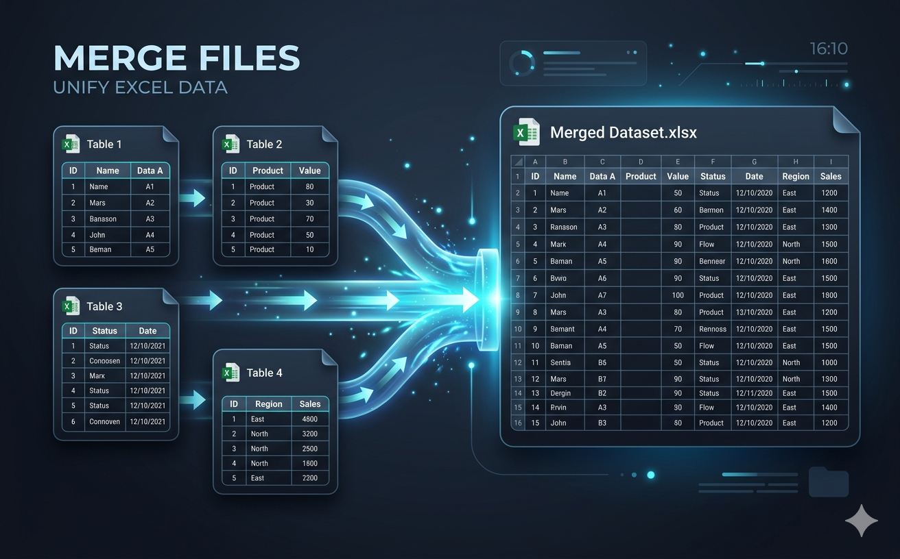

اجمع مئات ملفات Excel فوراً — بدون نسخ ولصق، بدون صيغ، بدون عمل يدوي. يدمج Datacorex بياناتك في دقائق.

تم تنظيم هذه الأداة في صفحات مستقلة حتى يبقى كل موضوع واضحًا ومركزًا.
دمج مئات ملفات Excel في مجموعة بيانات نظيفة واحدة في دقائق — مباشرة داخل متصفحك.